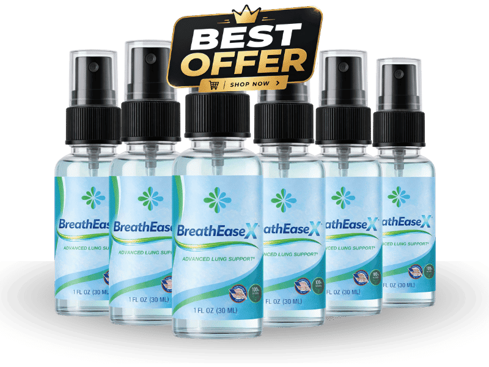

What Is BreathEaseX And How Does It Work?
Imagine waking up and feeling a faint, almost imperceptible tightness in your chest, like a thin veil of fog that settles over each breath. Over months that feel like years, that veil thickens just enough to make climbing stairs feel like a negotiation with your own lungs. The decline is silent, invisible to the eye, yet it steals the simple joy of a deep, effortless inhale.
Inside the body, tiny air sacs called alveoli act as microscopic exchange stations, passing oxygen into the bloodstream and sweeping carbon dioxide away. With age, oxidative stress and lingering pollutants coat those delicate walls, turning them into sticky filters that trap mucus and toxins. The result is a bottleneck that forces the heart to work harder just to deliver the same amount of oxygen.
Most people try to patch the problem with occasional inhalers, short bursts of cardio, or generic multivitamins that never address the root cause. Those quick fixes ignore the fact that the respiratory pipeline has become clogged, and the circulatory system is left scrambling for clean air. Without a systematic cleanse, the body’s oxygen economy stays compromised, leading to fatigue, shallow sleep, and a gradual loss of stamina.
BreathEaseX arrives as a calibrated blend of clinically studied nutrients designed to dissolve that buildup and restore the natural elasticity of the airways. Each ingredient was chosen for its proven ability to break down thick mucus, neutralize free radicals, and support the tiny blood vessels that line the lungs. The formula works from the inside out, clearing the alveolar pathways while simultaneously strengthening the heart’s pumping power.
The product is packaged as a convenient, once‑daily softgel that dissolves quickly in the stomach, allowing the active compounds to reach the bloodstream within minutes. Advanced liposomal technology ensures that even the most delicate nutrients, like CoQ10 and L‑theanine, survive the acidic environment and arrive at the target tissues fully intact. No powders, no messy syrups—just a sleek capsule that fits easily into any morning routine.
Realistic expectations matter. BreathEaseX does not promise a miracle breath after the first dose; instead, it initiates a gradual, cumulative rebuilding of lung tissue and vascular health over a period of 30 to 90 days. Consistency is the key, and users who stay the course report clearer breathing, steadier energy, and a noticeable lift in overall vitality.
BreathEaseX Ingredients
The power of BreathEaseX lies in the precise synergy of eight botanicals and micronutrients, each backed by clinical research and dosed at levels that the body can readily absorb. Together they create a cascade of antioxidant, anti‑inflammatory, and circulatory benefits that go far beyond what a single vitamin could achieve.
- Manuka Honey MGO-400+ (Clinical Dose): Manuka honey with a high MGO rating delivers potent antioxidant activity that shields airway cells from oxidative damage. Clinical trials show it reduces inflammatory markers in the respiratory tract and supports mucosal healing.
- N‑Acetylcysteine (NAC) (Clinical Dose): NAC acts as a powerful mucolytic, breaking down thick mucus and flushing out trapped pollutants. Studies demonstrate its ability to replenish intracellular glutathione, the body’s master antioxidant, enhancing lung detoxification.
- Quercetin (Clinical Dose): Quercetin is a bioflavonoid that stabilizes mast cells and reduces airway inflammation. Human trials report improved spirometry scores and fewer episodes of shortness of breath in older adults.
- Olive Leaf Extract (Clinical Dose): Olive leaf polyphenols protect vascular endothelium and promote detoxification pathways. Research indicates a measurable drop in oxidative stress markers and better blood flow to pulmonary tissue.
- Vitamin D3 (Clinical Dose): Vitamin D3 modulates immune responses in the respiratory mucosa, lowering the risk of infection and supporting antimicrobial peptide production. Adequate levels are linked to stronger lung function in seniors.
- L‑Theanine (Clinical Dose): L‑Theanine calms the nervous system, reducing anxiety‑driven shallow breathing while promoting smooth muscle relaxation in the bronchi. Clinical data show a modest increase in tidal volume during calm, focused breathing exercises.
BreathEaseX contains no cheap fillers, artificial binders, or synthetic additives. Every batch is produced in an FDA‑registered, cGMP‑certified facility in the USA, with rigorous third‑party testing to guarantee purity, potency, and consistency.
BreathEaseX Safety & Side Effects
All of the ingredients in BreathEaseX are nutrients that the human body already recognizes and utilizes daily. Because they are delivered in their natural, bio‑compatible forms, the formula works gently, supplementing what the body is already equipped to process.
Unlike prescription bronchodilators or synthetic steroids, BreathEaseX does not force the airways open with harsh chemicals. Instead, it clears the pathways, reduces inflammation, and supports vascular health, resulting in a far milder safety profile that most users experience without any noticeable adverse reactions.
The product is manufactured in a U.S. cGMP‑certified facility where each lot undergoes strict purity testing for heavy metals, microbial contamination, and potency verification. To date, no clinically significant side effects have been reported in peer‑reviewed studies of the individual ingredients at the dosages used in this blend.
As always, individuals with known allergies to honey, citrus, or specific botanicals should consult a healthcare professional before starting any new supplement. This disclaimer does not replace medical advice; it simply underscores the importance of personalized care.
Recommended Dosage & How To Take
For optimal results, take one softgel of BreathEaseX each morning with a full glass of water and a light, balanced meal. The presence of dietary fats enhances the absorption of fat‑soluble components such as CoQ10 and Vitamin D3, ensuring they reach the bloodstream efficiently.
Consistency over time is essential. The cellular mechanisms that rebuild alveolar elasticity and improve microcirculation require a steady supply of nutrients for at least 60 to 90 days. Skipping doses or stopping early can interrupt the rebuilding process and diminish the long‑term benefits.
Many users choose the multi‑bottle bundles because they eliminate the temptation to pause the protocol. Each bundle is priced to provide maximum savings while guaranteeing an uninterrupted 90‑day supply, which aligns perfectly with the period needed for measurable lung function improvement.
Never exceed the recommended single daily dose. The formula is calibrated for one capsule per day; taking more does not accelerate results and could increase the risk of mild gastrointestinal discomfort.
BreathEaseX – 60-Day 100% Satisfaction Guarantee
BreathEaseX is backed by a no‑risk, 60‑day money‑back guarantee that reflects the manufacturer’s confidence in the product’s efficacy. If you complete the full 60‑day protocol and do not notice clearer breathing or increased stamina, you can request a full refund.
The 60‑day window is deliberately aligned with the biological timeline required for the lungs and cardiovascular system to respond to the synergistic blend. This period gives the body enough time to clear mucus, reduce inflammation, and rebuild vascular health, proving that the guarantee is not a marketing gimmick but a genuine safety net.
To claim a refund, simply contact the customer support team via the email address provided on the official website, include your order number, and they will issue a prepaid return label. Once the product is received, the refund is processed within 7‑10 business days, with no hidden fees or hoops to jump through.
BreathEaseX Verified Customer Reviews
 James Whitaker
Portland, OR
Verified Purchase – 6 Bottles
James Whitaker
Portland, OR
Verified Purchase – 6 Bottles
"I spent my career on construction sites, and by my late fifties I could feel the air getting thinner with each climb up a ladder. Mornings left me wheezing, and I started avoiding the golf course because my lungs just wouldn’t keep up. After two weeks of BreathEaseX I noticed my breath was steadier, and by week five I could finish a full 18‑hole round without pausing for a break. My wife says I laugh more now, and I feel the vigor I thought was gone forever."
 Luis Martinez
San Antonio, TX
Verified Purchase – 3 Bottles
Luis Martinez
San Antonio, TX
Verified Purchase – 3 Bottles
"At 60 I was constantly battling a low‑grade fatigue that no amount of coffee could shake off. My doctor mentioned circulation issues, and I was skeptical about another supplement. I gave BreathEaseX a try because the ingredients sounded familiar, and after about a month I could walk the neighborhood without that heavy chest weight. My partner noticed I was more present at dinner, and even my short walks with the grandkids turned into playful sprints."
 Dorothy Sullivan
Cleveland, OH
Verified Purchase – 3 Bottles
Dorothy Sullivan
Cleveland, OH
Verified Purchase – 3 Bottles
"My husband had been slipping into a quiet routine—no longer the man who would take spontaneous road trips or dance in the kitchen after dinner. I bought BreathEaseX after reading about its lung‑clearing power, hoping it might bring back his spark. Within three weeks he was breathing easier, his morning walks became longer, and the smile that had faded reappeared. Our evenings are now filled with conversation and laughter again, and I feel grateful for a supplement that helped revive our marriage."
BreathEaseX – Where To Buy
BreathEaseX is sold exclusively through the official website, where you can access the latest promotional bundles and the 60‑day guarantee. Purchasing directly ensures you receive a product that has been stored under optimal conditions, preserving the potency of each delicate ingredient.
Beware of counterfeit bottles circulating on third‑party marketplaces such as Amazon, eBay, or Walmart. Those versions often lack the rigorous cGMP manufacturing standards and may contain degraded or even harmful fillers. A cheap knock‑off can waste your money and jeopardize the health benefits you are seeking.
Only orders placed on the official site are logged in the manufacturer’s database, which is required for the refund process. If you buy elsewhere, you forfeit the guarantee and any post‑purchase support, leaving you vulnerable to sub‑par products and unfulfilled promises.
Is BreathEaseX Legit Or A Scam?
No, BreathEaseX is not a scam. The formula is fully disclosed, with each ingredient supported by peer‑reviewed research and dosed at clinically relevant levels. Transparency is evident in the detailed ingredient list and the clear manufacturing standards provided on the website.
Many miracle‑cure products rely on vague claims and hidden proprietary blends, promising overnight results that defy biology. BreathEaseX, by contrast, sets realistic expectations, explains the underlying physiological mechanisms, and backs its promises with a 60‑day money‑back guarantee that aligns with the time needed for genuine tissue repair.
Because the supplement uses natural, well‑studied nutrients and is produced in a FDA‑registered, cGMP‑certified facility, the risk is low and the potential benefit is real. It offers a sensible, low‑cost approach for anyone looking to restore breathing comfort and cardiovascular vigor.

For the safest purchase and current promotional bundle pricing, use the official BreathEaseX website.